Blacksmithing and Knives
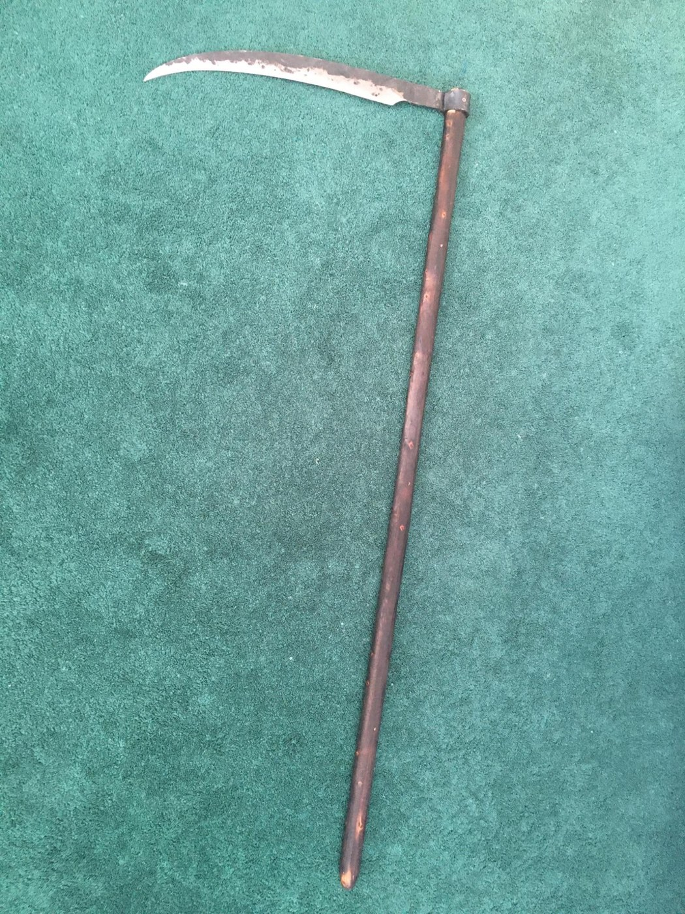
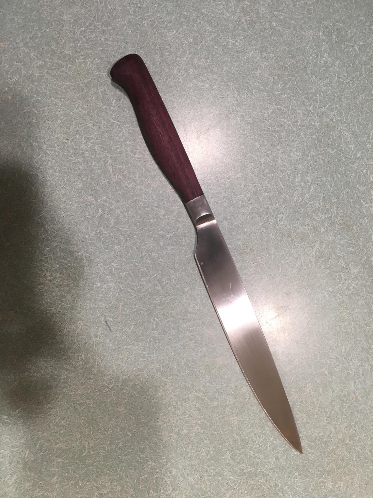
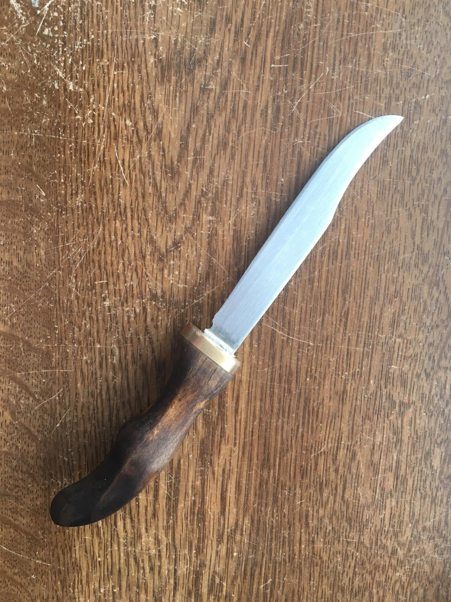
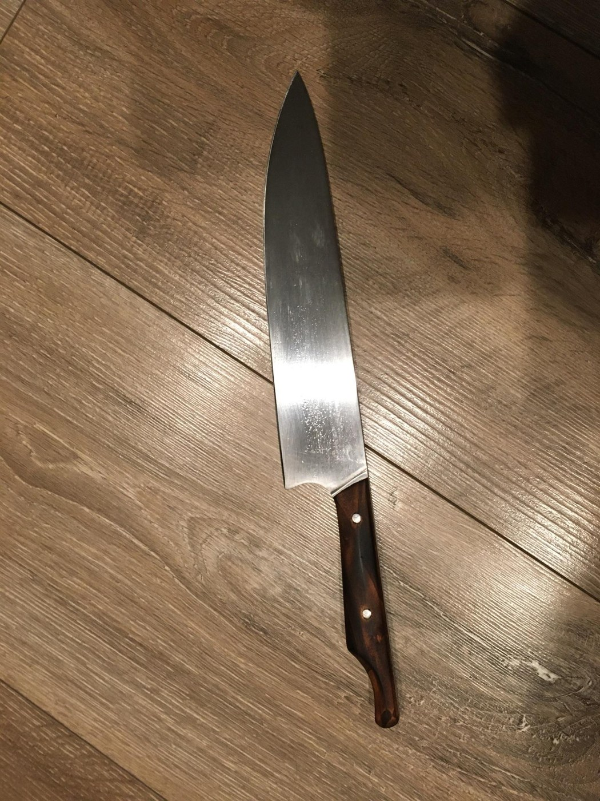
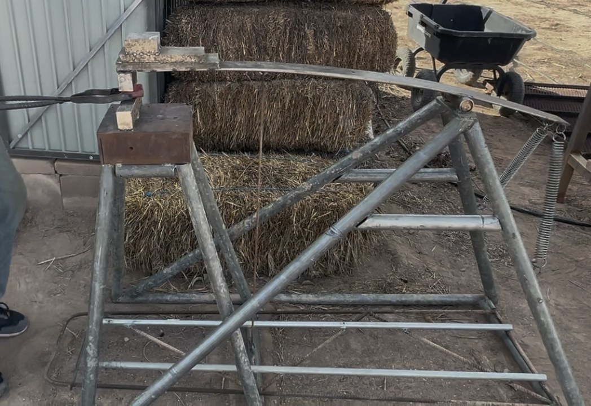
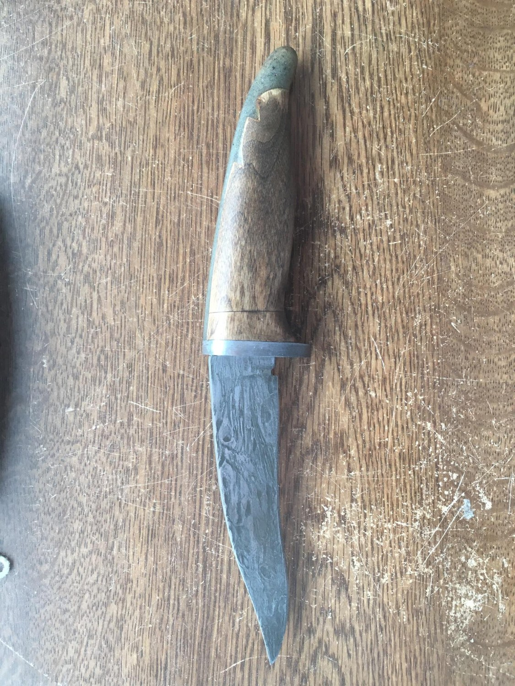
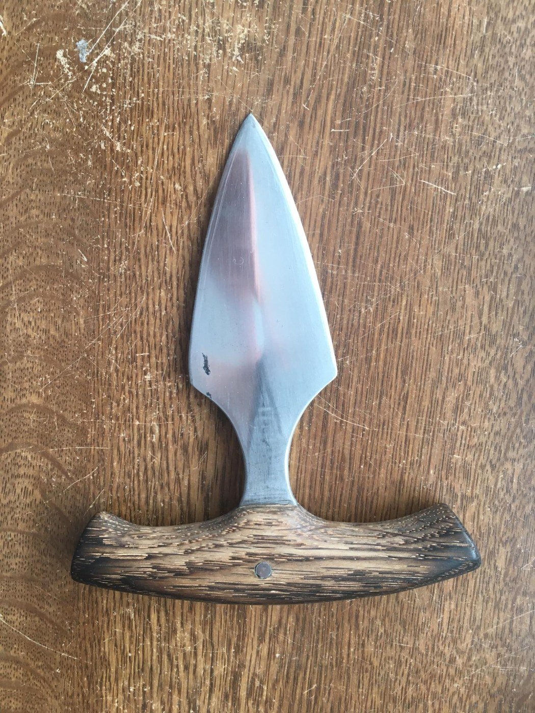
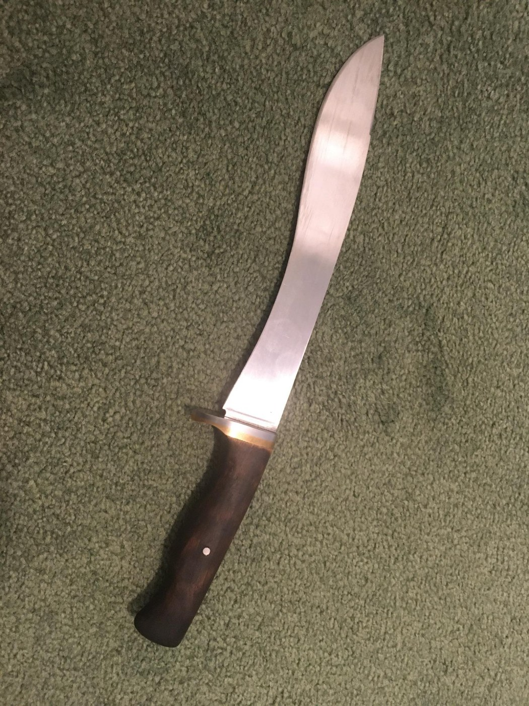
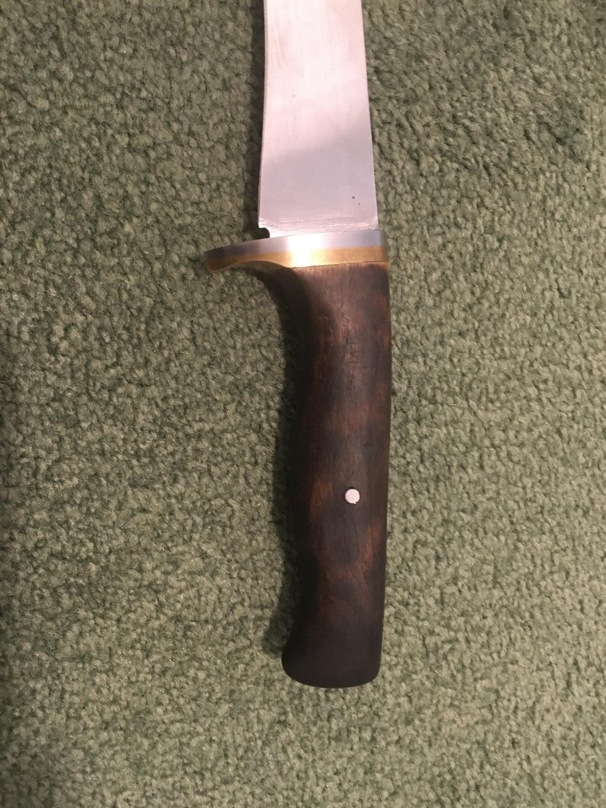
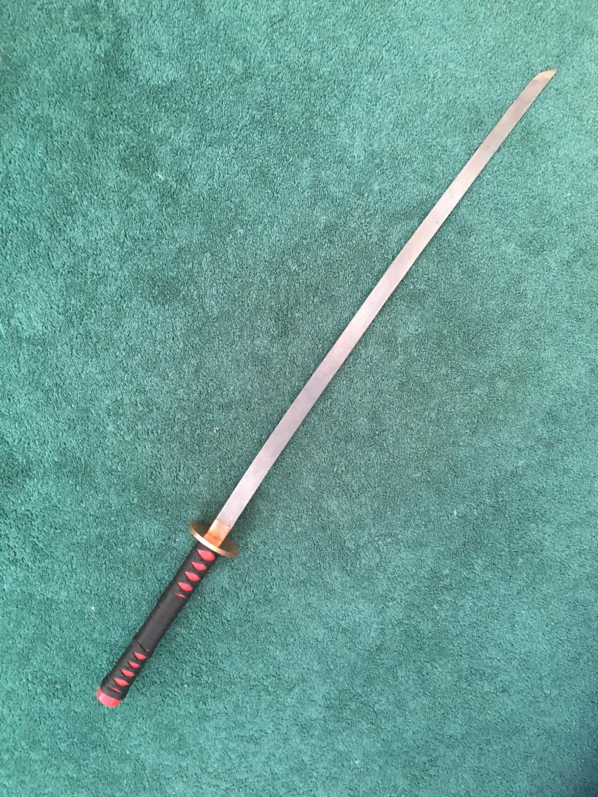
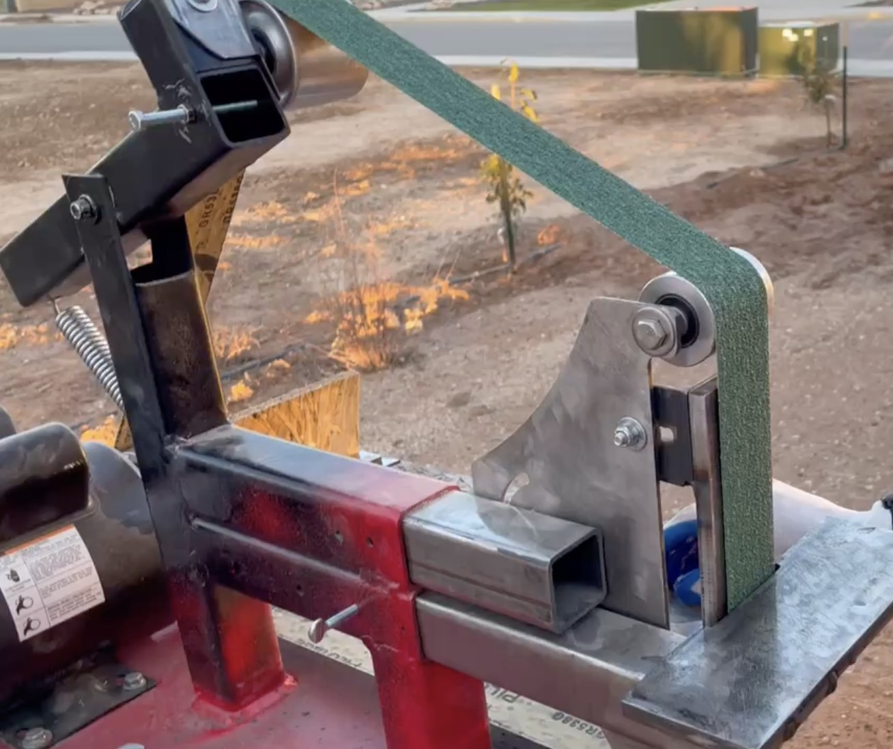
- I like building with my hands. When I was 15 I started looking for work that was both physical and creative. The first time I tried blacksmithing, I knew it fit — fire, metal, sharp things, and still room to design.
- Starting from nothing and figuring out how to forge knives was slow. A couple of mentors and a lot of research got me moving.
- Knife making is where I started to enjoy problem solving and thinking past the obvious path to a goal.
- Early problems were practical: how to heat the metal, what to shape it with, and where the material would come from.
- After trial, error, and some money spent, I could make the knives I wanted. I still enjoy shaping knives and tools from scratch.
- Along the way I made tools instead of buying them: a forge, tongs, a belt grinder, and a foot-powered power hammer I designed and fabricated to move metal faster.
- These early projects shaped how I work today.